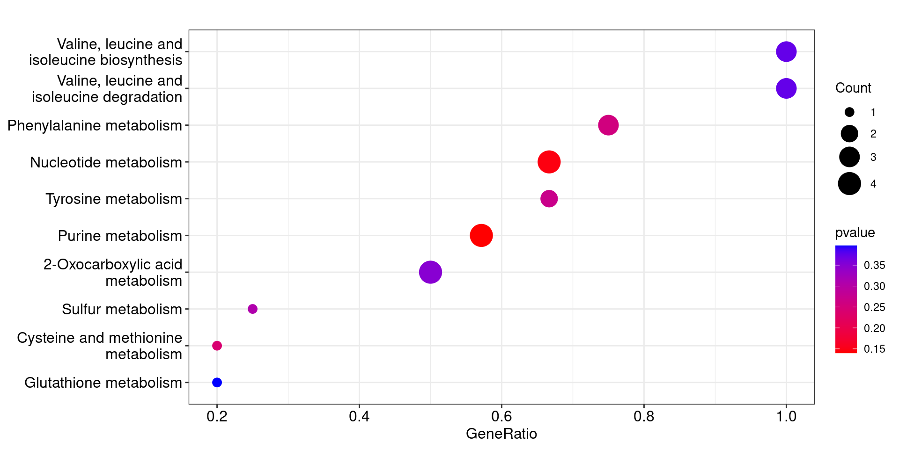
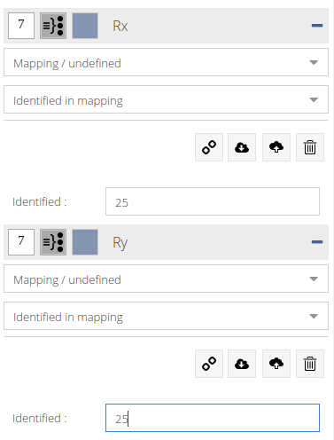

# Pre-filtered metabolite inputs
geno.mother.raw = read.table("data/ML_add_geno_mother11_05_2023.csv", sep = ";", header = T)
gestation.raw = read.table("data/ML_add_gestation_stage_11_05_2023.csv", sep = ";", header = T)
# Annotation database
annot.db = read.table("data/ASICS_annotationID_2022_02.csv", sep = "\t", header = T)TP metabolites
Goals
Read in & format sample data
Match IDs so they can be used with different pathway databases
Highlight enriched pathways using different methods & visualisations
Choose and understand parameters and their impact on the results
Input data
read.table is a generic function: specify the separator with sep= , and if there are column names, use header = T.
Data types
The two types of data we will be using are:
vector
dataframe
Vectors are lists of elements. Vector elements can be named.
Dataframes are tables: they have columns, rows, column names and can have row names.
Tidyverse
Tidyverse is a R package which loads a collection of other packages designed to work well together for data manipulation. Some packages it contains are tidyr, dplyr, ggplot2.
The syntax it is based on uses the pipe symbol: %>% , useful for chaining different operations.
The main operations used in these exercises are:
select(): for selecting columns by name, can also select everything except a column usingselect(-colname)filter(): for filtering rows by a condition, usually based on a columnleft_join(): for joining two dataframes on a common ID columnmutate(): for editing the values of a columnenframe(): for converting a named vector into a two-column dataframe, useful for getting KEGG pathways into the correct format in our casepull(): converts a dataframe column into a vector, does the same thing asdf$colnamerename(): for renaming column(s)relocate(): specify a column name to reorder and place it as the first column
You can also chain standard functions like unique(), na.omit().
Examples
Here is an example using the background set:
# Background set = all measurable metabolites
background_unfiltered = read.table("data/metabolites_present_endometre.csv", sep = ";", header = T)
tail(background_unfiltered) Metabolite names_asics Match HMDB PubChem KEGG SMILES Comment ChEBI METLIN
132 NA NA NA NA
133 NA NA NA NA
134 NA NA NA NA
135 NA NA NA NA
136 NA NA NA NA
137 NA NA NA NA
X X.1 X.2 X.3 X.4 X.5 X.6 X.7 X.8 X.9 X.10 X.11 X.12 X.13 X.14 X.15 X.16
132 NA NA NA NA NA NA NA NA NA NA NA NA NA NA NA NA NA
133 NA NA NA NA NA NA NA NA NA NA NA NA NA NA NA NA NA
134 NA NA NA NA NA NA NA NA NA NA NA NA NA NA NA NA NA
135 NA NA NA NA NA NA NA NA NA NA NA NA NA NA NA NA NA
136 NA NA NA NA NA NA NA NA NA NA NA NA NA NA NA NA NA
137 NA NA NA NA NA NA NA NA NA NA NA NA NA NA NA NA NAbackground = read.table("data/metabolites_present_endometre.csv", sep = ";", header = T) %>%
filter(!if_any(PubChem, is.na)) # filter out rows that contain NA in column PubChem
tail(background) Metabolite names_asics Match HMDB PubChem
40 Saccaric acid SaccaricAcid Glucaric acid HMDB0000663 33037
41 Succinate Succinate Succinic acid HMDB0000254 1110
42 Taurine Taurine Taurine HMDB0000251 1123
43 TMAO TMAO Trimethylamine N-oxide HMDB0000925 1145
44 UDPG UDPG Uridine diphosphate glucose HMDB0000286 53477679
45 Vanillic acid VanillicAcid Vanillic acid HMDB0000484 8468
KEGG
40 C00818
41 C00042
42 C00245
43 C01104
44 C00029
45 C06672
SMILES
40 [C@H]([C@@H]([C@@H](C(=O)O)O)O)([C@H](C(=O)O)O)O
41 C(CC(=O)O)C(=O)O
42 C(CS(=O)(=O)O)N
43 C[N+](C)(C)[O-]
44 C1=CN(C(=O)NC1=O)[C@@H]2[C@H]([C@H]([C@@H](O2)COP(=O)(O)OP(=O)(O)OC3[C@H]([C@@H]([C@H]([C@@H](O3)CO)O)O)O)O)O
45 COC1=C(C=CC(=C1)C(=O)O)O
Comment ChEBI METLIN X X.1 X.2 X.3 X.4 X.5 X.6 X.7 X.8 X.9 X.10 X.11 X.12
40 1 16002 5633 NA NA NA NA NA NA NA NA NA NA NA NA NA
41 1 15741 114 NA NA NA NA NA NA NA NA NA NA NA NA NA
42 1 15891 31 NA NA NA NA NA NA NA NA NA NA NA NA NA
43 1 15724 5876 NA NA NA NA NA NA NA NA NA NA NA NA NA
44 1 46229 5278 NA NA NA NA NA NA NA NA NA NA NA NA NA
45 1 30816 5471 NA NA NA NA NA NA NA NA NA NA NA NA NA
X.13 X.14 X.15 X.16
40 NA NA NA NA
41 NA NA NA NA
42 NA NA NA NA
43 NA NA NA NA
44 NA NA NA NA
45 NA NA NA NAAnd an example using the raw unfiltered fold changes:
# Join by metabolite names to get all fold changes with the ID columns (ChEBI, KEGG..)
all.fc.file = read.table("data/log2_FC_endometrium_metabolites_present.csv", sep = ";", header = T)
head(all.fc.file) metabolites fc_D110vsD90 fc_LWvsMS
1 Lactate 0.20843228 0.07893974
2 Myo-Inositol 0.10919475 -0.20458874
3 L-Glycine 0.04401215 -0.22991271
4 Taurine -0.07949751 -0.08002337
5 L-Alanine 0.12676021 0.07203598
6 Methanol 0.09152747 -0.21221730all.fc = read.table("data/log2_FC_endometrium_metabolites_present.csv", sep = ";", header = T) %>%
left_join(., background %>% select(names_asics, KEGG),
by = c("metabolites" = "names_asics")) %>%
rename("gestation" = fc_D110vsD90, "geno.mother" = fc_LWvsMS)
head(all.fc) metabolites gestation geno.mother KEGG
1 Lactate 0.20843228 0.07893974 C00186
2 Myo-Inositol 0.10919475 -0.20458874 <NA>
3 L-Glycine 0.04401215 -0.22991271 C00037
4 Taurine -0.07949751 -0.08002337 C00245
5 L-Alanine 0.12676021 0.07203598 C00041
6 Methanol 0.09152747 -0.21221730 C00132Pathway sets
Pathway sets are metabolites grouped together by a common function. We can get pathway sets from KEGG, Reactome, and using metabolic networks.
KEGG
Using the KEGG API, we can access the database directly inside R. We can get a list of all pathways for a given organism, and a list of all compounds per pathway. We can then match them together to get all metabolites organised into pathways for our organism.
# Pig KEGG pathways
pig.pathways = keggList("pathway", "ssc") %>%
enframe() %>%
mutate(name = str_remove(name,"^ssc"),
value = str_remove(value, " \\- Sus scrofa \\(pig\\)"))
# Compounds per pathways
pathway.compounds = keggLink("cpd", "pathway") %>%
enframe() %>%
mutate(name = str_remove(name,"^path:map"),
value = str_remove(value, "^cpd:"))
# Join the pathways we want to use with the compounds, filter out non metabolic pathways
kegg.pathways = pig.pathways %>%
left_join(., pathway.compounds, by = "name") %>%
filter(str_starts(name, "01|00"),
name != "01100")Other organisms, and a table to convert IDs:
# Human KEGG pathways
human.pathways = keggList("pathway", "hsa") %>%
enframe() %>%
mutate(name = str_remove(name,"^hsa"),
value = str_remove(value, " \\- Homo sapiens \\(human\\)"))
# All KEGG pathways
all.pathways = keggList("pathway") %>%
enframe() %>%
mutate(name = str_remove(name,"^map"))
# We can also use the KEGG API to extract the ChEBI IDs for compounds
chebi.to.kegg = keggConv("cpd", "chebi") %>%
enframe() %>%
mutate(name = str_remove(name,"^chebi:"),
value = str_remove(value, "^cpd:")) %>%
rename("ChEBI" = "name", "KEGG" = "value") %>%
unique()Reactome
Reactome pathways can be downloaded here, in Physical Entity (PE) Identifier mapping files > ChEBI to pathways.
Reactome has many more pathways than KEGG meaning it is harder to enrich them. The database contains many pathways not pertaining to metabolism meaning we would need to filter them (manually?).
# Create colnames
reactome.colnames = c("ChEBI", "RID", "URL", "PathwayName", "EvidenceCode", "Species")
# Lowest level pathways
reactome.pathways = read.table("data/ChEBI2Reactome_Pathway.txt", sep = "\t",comment.char = "", quote="", col.names = reactome.colnames) %>%
filter(Species == "Sus scrofa") %>% # Filter only pig pathways
select(ChEBI, PathwayName)%>% # Select relevant columns
relocate(PathwayName) %>% # Reorder
mutate(ChEBI = as.character(ChEBI)) %>% # Fix ChEBI IDs being read as numbers
left_join(., chebi.to.kegg, by = "ChEBI") %>% # Join with ChEBI to KEGG df to get KEGG IDs
select(-ChEBI) %>% # Remove ChEBI column
na.omit()
# All level pathways
reactome.all.pathways = read.table("data/ChEBI2Reactome_All_Levels.txt", sep = "\t",comment.char = "", quote="", col.names = reactome.colnames) %>%
filter(Species == "Sus scrofa") %>% # Filter only pig pathways
select(ChEBI, PathwayName)%>% # Select relevant columns
relocate(PathwayName) %>% # Reorder
mutate(ChEBI = as.character(ChEBI)) %>% # Fix ChEBI IDs being read as numbers
left_join(., chebi.to.kegg, by = "ChEBI") %>% # Join with ChEBI to KEGG df to get KEGG IDs
select(-ChEBI) %>% # Remove ChEBI column
na.omit()Metabolic network
Metabolic networks can be used for various flux-based simulations of metabolism, but they are also databases of knowledge. We can use pathway-metabolite information extracted from a network in the same way as any other pathway set.
# Metabolites have network-specific IDs, this is a mapped ID to KEGG and ChEBI table
metab.network.ids = read.table("data/metabolite_ids.tsv", sep = "\t", header = T, quote = "")
# The original file contains nan instead of NA, so replace them:
metab.network.ids$kegg[metab.network.ids$kegg == "nan"] = NA
metab.network.ids$chebi[metab.network.ids$chebi == "nan"] = NA
# Create a filter to filter out irrelevant pathways (specific to flux simulation)
metab.network.filter = c("Artificial reactions", "Isolated", "Miscellaneous", "Pool reactions", "Exchange/demand reactions", "Transport reactions")
# Read in the pathway data, map to KEGG and ChEBI, and filter
metab.network.pathways = read.table("data/metabolite_pathways.tsv", sep = "\t", header = T) %>%
unique() %>%
left_join(., metab.network.ids, by = "metabolite") %>%
filter(!(subsystem %in% metab.network.filter))CPDB
ConsensusPathDB is a compiled database of various pathway sets, including Reactome, KEGG, BioCyc and others. We are using it as an example of a very large pathway set database.
The database can be downloaded from http://cpdb.molgen.mpg.de/: > “Biological pathways (as defined by source databases) with their metabolites identified with KEGG / ChEBI / Pubchem-compound accession numbers”
ORA
Cluster profiler is normally used with gene enrichment and therefore has direct access to gene pathway set databases. For metabolites we will need to specify a custom pathway set.
Important parameters:
gene: a vector of IDs = pre-filtered metabolite IDsTERM2GENE: a two column data.frame of pathway names and metabolite IDs = custom pathway setuniverse: a vector of IDs = background datasetpAdjustMethod: “BH” by default, one of “holm”, “hochberg”, “hommel”, “bonferroni”, “BH”, “BY”, “fdr”, “none”pvalueCutoffandqvalueCutoff: default = 0.05 and 0.2 respectively
Basic ORA
We will use the KEGG IDs in the input data and perform ORA using the KEGG pathway sets. By default, the background set is the entire list of metabolites in the pathway set.
Geno mother dataset
Gestation data set
Varying background set
Changing the background set will completely change the resulting pathway significance, usually reducing the number of significant pathways. In metabolomics, we should use the set of measurable metabolites during the experiment. Depending on if it was targeted or untargeted, this set may be larger or smaller.
Using a restrictive background set means that we get fewer enriched pathways. However, biologically and statistically we must use a background set reflective of what could have been measured.

N = background set
n = input metabolites of interest
M = metabolites in pathway being tested against
k = overlap between n and M
Using the annotation set as an example
Varying pathway database
Instead of KEGG pathways, we can use the metabolic network pathways or Reactome pathways.
Metabolic network
Using the second larger dataset, it is harder to gain significantly enriched pathways. Using the metabolic network pathways, we are unable to get any enriched pathways even with no p-value cutoff. Only by removing the background set are we able to get enrichment.
Reactome
Reactome is a larger pathway set, meaning we need to use no background set (!) to get significant pathways.
As you can see, even though the p-values are low, having only one metabolite enrich each pathway is not necessarily relevant.
CPDB
Here is an example of using a non filtered pathway set database. We obtain many non-metabolic pathways that are enriched but are meaningless in terms of our input data.
Varying significant metabolites
The initial filtering of measured metabolites can also change the resulting enrichment. Here we can use a strict filtering of the fold changes in the initial dataset. Since it is stricter, we can’t use a background set in this example since we wouldn’t get any results.
We can also use a more relaxed threshold on this dataset’s fold changes, again without a background set for illustration purposes.
Varying minGSSize
By default, ORA filters out pathways smaller than 10 metabolites when enriching. This parameter can be varied depending on the pathway sets: if you know that they are smaller in general, lowering this threshold may be more relevant.
A lower minGSSize means more pathways to test against, which usually means higher p-values but more possibilities for small pathways to be enriched.
In this case, by setting minGSSize to 3, we gain some new enriched pathways at the cost of higher adjusted p-values. These pathways weren’t enriched before because there were less total pathways, so their enrichments weren’t as significant. We most likely added many small pathways with no enrichment by lowering the minGSSize.
Bonus: varying p-value cutoff
We can also vary the p-value and p-value adjust cutoff to determine what is and isn’t a significantly enriched pathway. This must be done with caution as a high cutoff will provide many false positives.
We can use the previous example with a pvalueCutoff of 0.05 (the default).
ORA on up vs down regulated in dataset
In addition to using the entire filtered fold changes, we can split the dataset into up and down regulated metabolites.
Using a higher pvalueCutoff to show enriched pathways: again, because we are being stringent with the background set and by splitting the input set into two, we can be less strict with the p.adjust.
Upregulated metabolites
We can plot using the p-value as a the colour to show that these unadjusted p-values are still significant.
Downregulated metabolites:
This results in pathways that we can define as up or down regulated in addition to being enriched.
GSEA
In this section, we remove set multiple correction to "none" as GSEA will not return anything significant with a small input dataset. This is illustrated using the gseaplots.
Gestation data set
Using fold changes
For illustrative purposes, we set the pvalueCutoff to be 1 to show all pathway p-values.
gsea.input.gestation = all.fc %>%
arrange(desc(gestation)) %>%
na.omit() %>%
pull(gestation,KEGG)
gsea.gestation.kegg = GSEA(gsea.input.gestation,
TERM2GENE = kegg.pathways %>% select(-name),
minGSSize = 3, pvalueCutoff = 1,
pAdjustMethod = "none")
tibble(gsea.gestation.kegg@result)# A tibble: 27 × 11
ID Description setSize enrichmentScore NES pvalue p.adjust qvalue rank
<chr> <chr> <int> <dbl> <dbl> <dbl> <dbl> <dbl> <dbl>
1 Purin… Purine met… 7 -0.731 -1.32 0.117 0.117 0.885 9
2 Nucle… Nucleotide… 6 -0.740 -1.29 0.148 0.148 0.885 9
3 Cyste… Cysteine a… 5 0.652 1.25 0.256 0.256 0.885 1
4 Tyros… Tyrosine m… 3 0.726 1.20 0.293 0.293 0.885 6
5 Pheny… Phenylalan… 4 0.670 1.18 0.321 0.321 0.885 10
6 Argin… Arginine b… 3 -0.732 -1.12 0.370 0.370 0.885 15
7 Valin… Valine, le… 3 0.683 1.13 0.372 0.372 0.885 16
8 Valin… Valine, le… 3 0.683 1.13 0.372 0.372 0.885 16
9 Sulfu… Sulfur met… 4 0.632 1.11 0.377 0.377 0.885 6
10 2-Oxo… 2-Oxocarbo… 8 0.467 1.04 0.407 0.407 0.885 11
# ℹ 17 more rows
# ℹ 2 more variables: leading_edge <chr>, core_enrichment <chr>This gseaplot shows that even if Purine metabolism seems to be enriched, with so few metabolites it doesn’t reach a high enough enrichment score and p-value to be classed as significant when correcting the p-value. Even the raw p-value is fairly high at 0.169.
The gseaplot also reveals that we have a split of strong fold changed metabolites: 1 up and 4 down.
This dotplot uses the unadjusted pvalue as the colour legend. Only the very red pathways could be considered as enriched.
Using absolute fold changes
In genomics, when genes are upregulated together this usually means that the enriched pathway is upregulated. With metabolites, pathways can be enriched regardless of an increase or a decrease in metabolite concentration: this means we can look for enriched pathways that are affected using the metabolites, without being able to conclude on its up or down regulation.
To do this, we use the absolute value of the fold changes instead of the raw fold changes. We also need to add a parameter to GSEA: scoreType = "pos", to do a one tailed test, since all our values will be positive.
gsea.input.gestation = all.fc %>%
mutate(gestation = abs(gestation)) %>%
arrange(desc(gestation)) %>%
na.omit() %>%
pull(gestation,KEGG)
gsea.gestation.kegg = GSEA(gsea.input.gestation,
TERM2GENE = kegg.pathways %>% select(-name),
minGSSize = 3, pvalueCutoff = 1,
pAdjustMethod = "none",
scoreType="pos")In the gseaplot, we can see that we have 5 highly ranked metabolites for Purine metabolism, instead of 1 up and 4 down as seen in the previous gseaplot. This groups together the metabolites affected by the condition in order to better enrich affected pathways.
Geno mother data set
We can do the same analyses with the second data set.
Using fold changes
gsea.input.geno = all.fc %>%
mutate(geno.mother = geno.mother) %>%
arrange(desc(geno.mother))%>% na.omit() %>%
pull(geno.mother,KEGG)
gsea.geno.kegg = GSEA(gsea.input.geno,
TERM2GENE = kegg.pathways %>% select(-name),
minGSSize = 3,
pvalueCutoff = 1,
pAdjustMethod = "none")
tibble(gsea.geno.kegg@result)# A tibble: 27 × 11
ID Description setSize enrichmentScore NES pvalue p.adjust qvalue rank
<chr> <chr> <int> <dbl> <dbl> <dbl> <dbl> <dbl> <dbl>
1 Biosy… Biosynthes… 14 -0.718 -1.65 0.0119 0.0119 0.321 12
2 Thiam… Thiamine m… 3 -0.902 -1.43 0.0513 0.0513 0.520 8
3 Cyste… Cysteine a… 5 -0.808 -1.45 0.0604 0.0604 0.520 3
4 Gluta… Glutathion… 5 -0.783 -1.41 0.0771 0.0771 0.520 12
5 Carbo… Carbon met… 9 -0.587 -1.22 0.218 0.218 0.964 13
6 Glyce… Glyceropho… 5 0.688 1.20 0.294 0.294 0.964 15
7 Oxida… Oxidative … 3 -0.749 -1.19 0.310 0.310 0.964 8
8 Nucle… Nucleotide… 6 0.610 1.11 0.403 0.403 0.964 4
9 Purin… Purine met… 7 0.571 1.08 0.423 0.423 0.964 4
10 Argin… Arginine b… 3 0.671 1.08 0.434 0.434 0.964 3
# ℹ 17 more rows
# ℹ 2 more variables: leading_edge <chr>, core_enrichment <chr>The most enriched pathway for this dataset is Biosynthesis of cofactors. In the gseaplot, many metabolites have a strong negative fold change.
Using absolute fold changes
By using the absolute values of fold changes, we can reveal pathways that weren’t enriched before simply because their metabolites were split over up and down regulated metabolites.
gsea.input.geno.abs = all.fc %>%
mutate(geno.mother = abs(geno.mother)) %>%
arrange(desc(geno.mother)) %>%
na.omit() %>%
pull(geno.mother,KEGG)
gsea.geno.kegg.abs = GSEA(gsea.input.geno.abs,
TERM2GENE = kegg.pathways %>% select(-name),
minGSSize = 3, pvalueCutoff = 1,
pAdjustMethod = "none",
scoreType="pos")Metabolic network pathways instead of KEGG pathways
gsea.gestation.network = GSEA(gsea.input.gestation,
TERM2GENE = metab.network.pathways %>% select(subsystem, kegg) %>% na.omit(),
minGSSize = 3, pvalueCutoff = 0.1, pAdjustMethod = "none")
tibble(gsea.gestation.network@result)# A tibble: 1 × 11
ID Description setSize enrichmentScore NES pvalue p.adjust qvalue rank
<chr> <chr> <int> <dbl> <dbl> <dbl> <dbl> <dbl> <int>
1 Purine… Purine met… 11 0.709 1.31 0.0867 0.0867 0.967 11
# ℹ 2 more variables: leading_edge <chr>, core_enrichment <chr>gsea.geno.kegg = GSEA(gsea.input.geno,
TERM2GENE = metab.network.pathways %>% select(subsystem, kegg) %>% na.omit(),
minGSSize = 3, pvalueCutoff = 0.05, pAdjustMethod = "none")
tibble(gsea.geno.kegg@result)# A tibble: 3 × 11
ID Description setSize enrichmentScore NES pvalue p.adjust qvalue rank
<chr> <chr> <int> <dbl> <dbl> <dbl> <dbl> <dbl> <dbl>
1 Glutat… Glutathion… 8 -0.817 -1.67 0.0122 0.0122 0.249 12
2 Ascorb… Ascorbate … 4 -0.9 -1.52 0.0175 0.0175 0.249 9
3 Glycin… Glycine, s… 11 -0.736 -1.60 0.0178 0.0178 0.249 14
# ℹ 2 more variables: leading_edge <chr>, core_enrichment <chr>MetExplore
MetExplore can be found here. Click on START MetExplore to start.
It can be used without an account.
Biosource
In the Network Data tab, you can browse all available BioSources. BioSources are metabolic networks. We recommend using the Human1 / HumanGEM network as it is the most recent network.
On the right of the website, you can start typing the name of a network and select the network you wish to use. You can also right click in the BioSources table and Select Biosource.
Data in the network
The tabs along the top of the window in the Network Data tab show the different types of information included in the network.
Compartments represent cellular compartments such as cytosol, nucleus…
Pathways are pathway sets defined in the model.
Reactions usually have a name and a GPR (gene protein reaction) relationship, which is a rule defining the activity of a reaction based on the activity of one or more genes.
Metabolites have a name and an Identifier, either specific to the network or sometimes an external ID (KEGG for example). They also usually have a compartment, meaning there are multiple versions of some metabolites with different compartments.
Mapping your data
If you have reaction or metabolite IDs, you can map them to a network, run pathway enrichment and visualise them. This is done by clicking the Omics button > Mapping > From Omics.
Here you can upload a file or copy paste directly from Excel into the grid. In this example, we pasted the KEGG IDs from the geno mother dataset.
By checking “Taking into account chemical library” you can provide a background set for pathway enrichment. Once you have uploaded or pasted the data, you can select the Feature type depending on the ID you provided (e.g. KEGG). Then, click Map, and it will tell you how many IDs were successfully mapped to the network.
Pathway enrichment
When data is mapped, pathway enrichment is automatically calculated on the input data.
You can find the results in Network Data > Pathways as new columns. You can then click on the column names to order by p-value, coverage etc.
Visualise the selected network
By selecting one or more pathways, you can visualise your mapped data among all metabolites of the pathway(s). To do this, select multiple pathways by Shift + clicking or Ctrl + clicking. Once you have your selection, right click > Filter on selection. This will filter the reactions in the network to only show those in the pathways you have filtered.
Cart
You can then go into the Reactions tab and right click on any reaction > Copy All to cart. The cart on the right of the screen is what contains the reactions you will visualise in the visualisation section.
Create a network viz
Right click on any reaction in the cart and click Create network in viz from cart, or go directly to the Network Viz tab and click MetExplore selection.
This should show the selected reactions in the visualisation tab. Here, metabolites are circles and reactions are squares.
Side compounds
Sometimes, there are some areas that are very densely connected. This is due to side compounds being very highly connected in the network. Side compounds are metabolites such as ATP, water, H+ used in many reactions. In MetExplore, the Human1 metabolic network has a predefined list of side compounds. Click on Drawing > Remove side compounds to remove them from the visualisation, and click the Play button to let the layout algorithm calculate a new layout.
Compartment colours
On the left, we have the Network Manager which helps us change various styles of the network. Click on Compartments and click highlight compartments on links to see the compartments for each reaction.
Visualise mapped data
Go to Styles > Metabolite and click on the middle (Mapping) column of the Node background. Click on Select a condition and choose your mapping (Mapping / undefined). In Type of data, select Identified in mapping. You can change the colour to red for example.
Input metabolites highlighted in red
Changing width/height and roundness
You can further enhance your visualisation by changing the width and height of mapped metabolites in a similar fashion.

Larger nodes for input metabolites
Other mapping
Instead of mapping all of your metabolomics dataset, you could map the leading edge metabolites from GSEA (which is a subset of your data for one pathway).
You can visualise more than one pathway at once, but too many will be very slow to load!